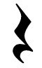
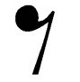

Znak muzyczny, który wskazuje w którym momencie powinna byæ cisza, czyli, w którym momencie przestajemy graæ. Pauzy podobnie jak nuty posiadaj¹ wartoœci rytmiczne, jednak nie posiadaj¹ „wysokoœci”. Mo¿na powiedzieæ, ¿e ka¿da nuta posiada swój odpowiednik w postaci pauzy. Id¹c od najd³u¿ej trwaj¹cych pauz wyró¿niamy pauzê ca³onutow¹, pó³nutow¹, æwierænutow¹, ósemkow¹ itd.
Rodzaje pauz:
Calonutowa
Odpowiednik calej nuty, trwa tak dlugo jak dlugo liczymy cala nute. Liczymy ja do 4i (4 pelne uderzenia). Ponizej symbol:
Polnutowa
Odpowiednik polnuty, trwa tak dlugo jak dlugo liczmy polnute. Liczymy ja do 2i (2 pelne uderzenia). Ponizej symbol:
Cwiercnutowa
Odpowiednik cwiercnuty, trwa tak dlugo jak dlugo liczymy cwiercnute. Liczymy ja do 1i (1 pelne uderzenie). Ponizej symbol:

Osemkowa
Odpowiednik osemki, trwa tak dlugo jak dlugo liczymy osemke. Liczymy ja do 1 (czas trwania polowy uderzenia). Ponizej symbol:

Symbole pauz maja oczywiscie swoje scisle okreslone polozenie na pieciolinii. Prezentuje to ponizszy rysunek:

Pauza calonutowa oraz pauza polnutowa graficznie roznia sie tylko tym do której linii pieciolinii przylegaja.
|